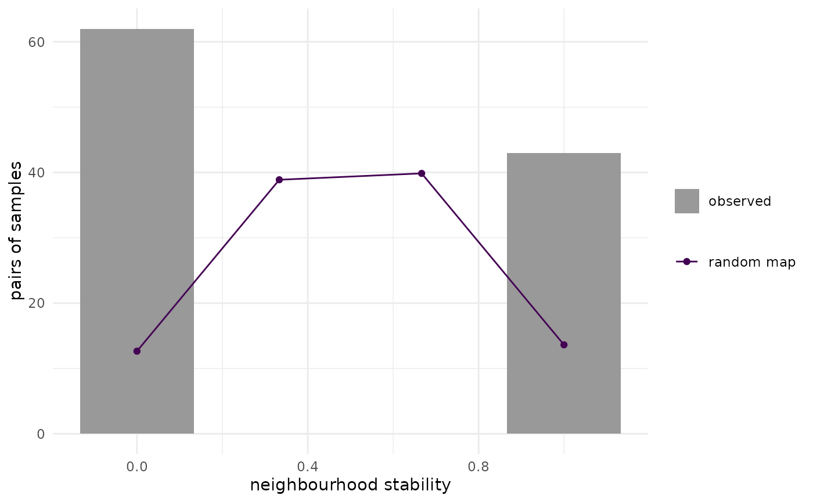
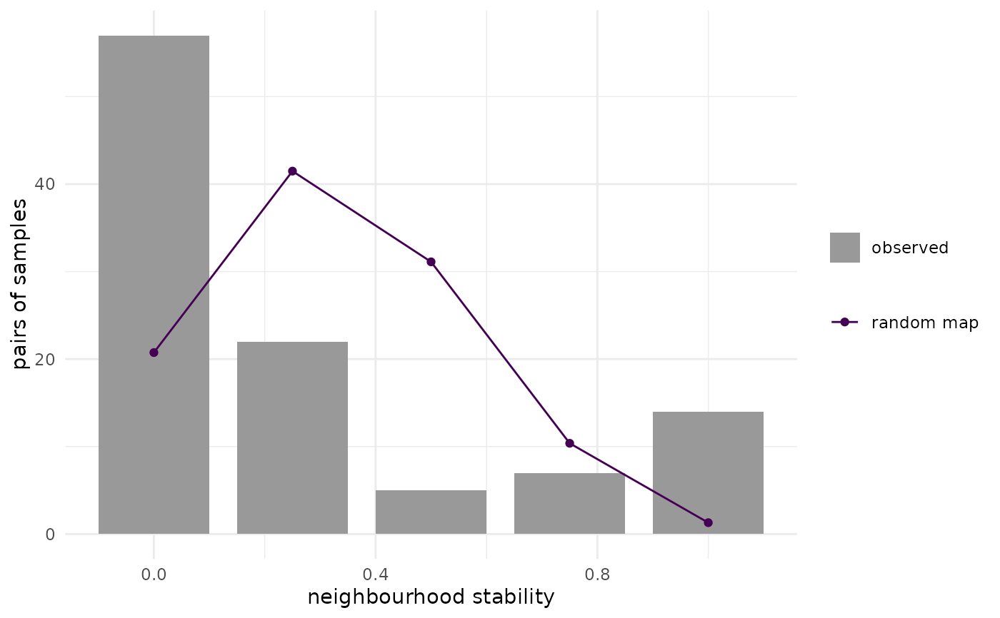

Self-organising maps are calculated repeatedly from resampled data with the same settings as the original map. The stability of the quantisation and of the neighbourhood relations of the samples is assessed (de Bodt et al. 2002).
Usage
eemsom_stability(
eem_list,
som,
type = "bootstrap",
nrep = 20,
radius = 1,
seed = NULL,
cores = 1,
verbose = FALSE
)
# S3 method for class 'eemsom_stability'
print(x, ...)Arguments
- eem_list
object of class eemlist, the samples used to calculate
som- som
object of class eemsom, see
eemsom- type
"bootstrap"(default, de Bodt et al. 2002) or"loo"(leave-one-out, Ejarque-Gonzalez and Butturini 2014)- nrep
number of maps (
type = "bootstrap") or number of maps per left-out sample (type = "loo")- radius
two samples are neighbours if their units are not more than
radiusunits apart- seed
seed for the random number generator. With
NULL(default), the current random number stream of the session is used, soset.seedbefore the call gives reproducible results. With a number, the seed is set for this calculation only and the random number state of the session is restored afterwards. Each map gets its own seed drawn from this stream, so the result does not depend oncores(with the default random number generator, seeRNGkind).- cores
number of parallel calculations
- verbose
print infos, with
cores = 1also the progress- x
object of class eemsom_stability
- ...
further arguments, not used
Value
object of class eemsom_stability, a list containing
quantisation: data frame with columns rep, ss_intra and left_out (only for
type = "loo")neighbourhood: data frame with columns sample1, sample2 and stability
random: probability of two samples being neighbours on a random map
loo: only for
type = "loo", data frame with columns sample and distance (mean distance of each sample to its best matching unit on the maps calculated without it)nmaps, type, radius: number of maps and settings
Details
For each map, all samples are mapped to their best matching unit, including samples that were not part of the resampled data.
Quantisation: the intra-class sum of squares (SS intra), the sum of the squared distances between samples and their prototypes, is calculated for each map. A low coefficient of variation indicates a stable quantisation.
Neighbourhood: for each pair of samples, the stability is the share of maps in which both samples are neighbours. Stable maps have values close to 0 or 1. On a randomly organised map, two samples are neighbours with probability p (element random), the stability then follows a binomial distribution.
Outliers: with type = "loo", each sample is mapped to the maps calculated without it. Its distance to the best matching unit is high, if no other sample is similar, which corresponds to a large residual of a sample that is not part of a PARAFAC model. The mean distance over nrep maps is returned in the element loo. Samples with distinctly higher values than the others are candidates for outliers, which should be checked further, e.g. by eempf_leverage and eempf_residuals_plot in a PARAFAC analysis.
Run time: nrep maps (type = "bootstrap") or nrep times the number of samples maps (type = "loo") are trained with the settings of som, so the run time is the corresponding multiple of the training time of eemsom. Please see there for ways to reduce the training time and use cores for parallel calculation.
References
de Bodt, E., Cottrell, M., Verleysen, M. (2002). Statistical tools to assess the reliability of self-organizing maps. Neural Networks 15(8-9), 967-978. doi:10.1016/S0893-6080(02)00071-0
Ejarque-Gonzalez, E., Butturini, A. (2014). Self-Organising Maps and Correlation Analysis as a Tool to Explore Patterns in Excitation-Emission Matrix Data Sets and to Discriminate Dissolved Organic Matter Fluorescence Components. PLoS ONE 9(6), e99618. doi:10.1371/journal.pone.0099618
See also
Other stability:
eemsom_plot_stability()
Examples
data(eem_list)
som <- eemsom(eem_list, dim = c(3, 3), rlen = 20, seed = 42)
stab <- eemsom_stability(eem_list, som, nrep = 3, seed = 42)
stab
#> Stability of a self-organising map (bootstrap, 3 maps)
#> SS intra: mean 3346, median 3434, CV 22.9 %
#> neighbourhood (radius 1): pairs always or never neighbours: 100 %
#> expected on a random map: 25 %
eemsom_plot_stability(stab)

# \donttest{
# in parallel; with real data sets, use more repetitions
som <- eemsom(eem_list, rlen = 100, seed = 42)
stab <- eemsom_stability(eem_list, som, nrep = 4, cores = 2, seed = 42)
eemsom_plot_stability(stab)

# }